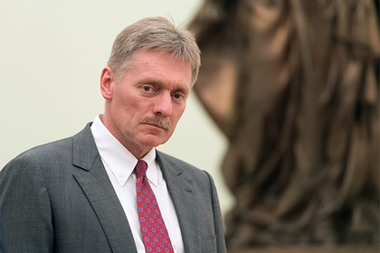
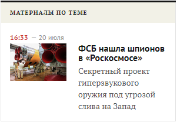

выпустить обвиненного в госизмене
ученого

Пресс-секретарь президента России Дмитрий Песков заявил, что из СМИ узнал о «Мне неизвестно, что официально такое письмо входило [в администрацию 
Ранее в среду стало известно, что Виктора Кудрявцева задержали в середине июля по подозрению в передаче
Ссылка на источник
Больше важных новостей в Telegram-канале «Лента дня». Подписывайся!
Ссылки по теме
Ученый из «Роскосмоса» передал секретные данные институту в Брюсселе
Сын обвиненного в госизмене ученого из «Роскосмоса» рассказал о работе отца
Ученые потребовали выпустить из СИЗО обвиняемого в госизмене 74-летнего коллегу
письме в адрес главы государства от Санкт-Петербургского союза ученых в
поддержку 74-летнего ведущего научного сотрудника Центрального научно-
исследовательского института машиностроения (ЦНИИмаш, головной научный
институт госкорпорации «Роскосмос») Виктора Кудрявцева, обвиняемого в
госизмене. Об этом сообщает ТАСС в среду, 15 августа.
президента], но из сообщений СМИ мы узнали, что такое обращение было
сделано. Но как, по каким каналам, я сказать не могу, я не располагаю такой
информацией», — заявил Песков.
петербургский союз ученых направил
открытое письмо президенту
Владимиру Путину с просьбой «по
гуманитарным соображениям»
отпустить из СИЗО их 74-летнего
коллегу. Авторы письма утверждают,
что Кудрявцев страдает тяжелыми
хроническими заболеваниями, перенес
инфаркт, болен сахарным диабетом
второго типа.
секретных данных о гиперзвуковых технологиях в боевых ракетных комплексах
одной из стран НАТО. По версии следствия, госизмену он прикрывал
сотрудничеством с бельгийским институтом.